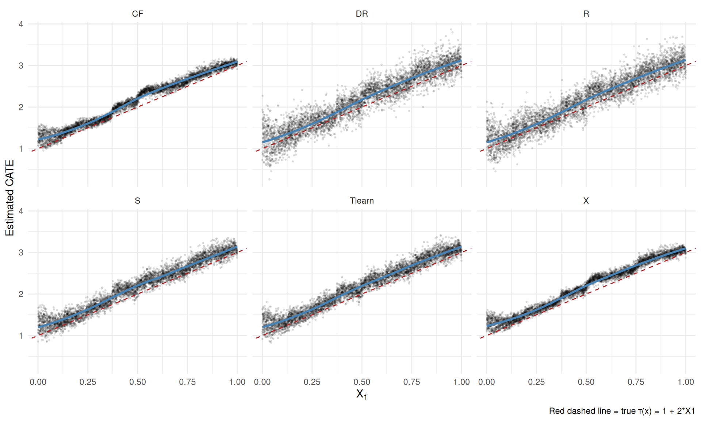

9 Heterogeneous Treatment Effects with Machine Learning
The estimands chapter defined the conditional average treatment effect
\[ \text{CATE}(x) = \mathbb{E}[Y(1) - Y(0) \mid X = x] \tag{9.1}\]
as the effect of treatment for units with covariates \(X=x\). In the simulation we could compute it from known potential outcomes. In real data we do not observe both \(Y(0)\) and \(Y(1)\), so CATE has to be estimated from \((X,D,Y)\).
I use four kinds of tools:
- Meta-learners: S-, T-, X-, R-, and DR-learners.
- Causal forests: random forests designed for CATE estimation.
- BLP and CLAN: simple summaries and tests of heterogeneity.
- Policy trees: rules for deciding who should be treated.
9.1 The data-generating process
We simulate \(n = 5000\) units with five covariates, each drawn independently from \(U(0,1)\). Treatment is \(D \sim \text{Bernoulli}(\Lambda(-0.3 + 1.5X_2))\). The CATE function is the one from the estimands chapter, \(\tau(x) = 1 + 2x_1\). The potential outcomes are \(Y(0) = 0.5X_2 + \varepsilon\) with \(\varepsilon \sim N(0,1)\) and \(Y(1) = Y(0) + \tau(X)\), and we observe \(Y = DY(1) + (1-D)Y(0)\).
Two covariates do the work and three are irrelevant. \(X_1\) modifies the effect but has nothing to do with selection. \(X_2\) drives both treatment and the outcome, so it is a backdoor confounder, and it is observed. \(X_3\), \(X_4\) and \(X_5\) enter neither equation. The population ATE is \(\int_0^1 (1+2x)\,dx = 2\).
The aim is to hand six estimators the same data and see which recover \(\tau(x)\), judged by the correlation between estimated and true individual effects.
Code
set.seed(42)
n <- 5000
p <- 5 # 5 covariates: only X1 is the effect modifier; X2..X5 are noise
X <- matrix(runif(n * p), n, p)
colnames(X) <- paste0("X", 1:p)
# Treatment depends on the OBSERVED covariate X2 (a backdoor confounder we
# adjust for), so unconfoundedness given X holds and the estimators are
# consistent for the true ATE/CATE.
ps <- plogis(-0.3 + 1.5 * X[, 2])
D <- rbinom(n, 1, ps)
tau <- 1 + 2 * X[, 1] # CATE varies along X1 only
Y0 <- 0.5 * X[, 2] + rnorm(n)
Y1 <- Y0 + tau
Y <- ifelse(D == 1, Y1, Y0)
cat(sprintf("n = %d, true ATE = %.3f\n", n, mean(tau)))n = 5000, true ATE = 2.006True CATE at X1 = 0.2: 1.40True CATE at X1 = 0.8: 2.60The realized ATE in this draw is 2.006 against a population value of 2, and the true CATE runs from 1.40 at \(X_1 = 0.2\) to 2.60 at \(X_1 = 0.8\). Because \(X_2\) is observed and every estimator below conditions on it, unconfoundedness holds and all of them are consistent for the true CATE and ATE. Any differences we see are finite-sample behaviour, not bias from a missing variable.
9.2 Meta-learners
A meta-learner is a recipe that turns a regression method into a CATE estimator. The regression method can be a random forest, boosting, neural network, or a simple linear model.
9.2.1 S-learner (“single”)
Fit one regression of \(Y\) on \((D, X)\), then predict the difference between \(D=1\) and \(D=0\) at each \(x\):
\[ \hat\tau^S(x) = \hat\mu(1, x) - \hat\mu(0, x). \tag{9.2}\]
Code
# Use a flexible learner — random forest from grf::regression_forest
XD_train <- cbind(D = D, X)
fit_S <- regression_forest(XD_train, Y, num.trees = 500)
# Counterfactual predictions at D = 1 and D = 0 for every X
mu1 <- predict(fit_S, cbind(D = rep(1, n), X))$predictions
mu0 <- predict(fit_S, cbind(D = rep(0, n), X))$predictions
tau_S <- mu1 - mu0
cor_S <- cor(tau_S, tau)
cat(sprintf("S-learner CATE correlation with truth: %.3f\n", cor_S))S-learner CATE correlation with truth: 0.970The S-learner’s estimates correlate 0.970 with the true individual effects. It is simple, and its weakness is that the model may treat \(D\) as a minor predictor of \(Y\) and shrink the treatment effect toward zero.
9.2.2 T-learner (“two”)
Fit two separate regressions: \(\hat\mu_1\) on treated units, \(\hat\mu_0\) on controls. Then \(\hat\tau^T(x) = \hat\mu_1(x) - \hat\mu_0(x)\).
Code
fit_T1 <- regression_forest(X[D == 1, ], Y[D == 1], num.trees = 500)
fit_T0 <- regression_forest(X[D == 0, ], Y[D == 0], num.trees = 500)
mu1_T <- predict(fit_T1, X)$predictions
mu0_T <- predict(fit_T0, X)$predictions
tau_T <- mu1_T - mu0_T
cor_T <- cor(tau_T, tau)
cat(sprintf("T-learner CATE correlation with truth: %.3f\n", cor_T))T-learner CATE correlation with truth: 0.968The T-learner correlates 0.968, essentially the same as the S-learner. Giving treatment and control separate outcome models can help with heterogeneity, but it can also extrapolate badly when the treated and control covariate distributions do not overlap.
9.2.3 X-learner (Künzel et al. 2019)
The X-learner starts from the T-learner. It imputes missing potential outcomes, creates pseudo-treatment effects, and then smooths those pseudo-effects as functions of \(X\).
Code
# Step 1: T-learner fits (already done above)
# Step 2: Pseudo-outcomes
D1_pseudo <- Y[D == 1] - predict(fit_T0, X[D == 1, ])$predictions # observed - imputed Y(0)
D0_pseudo <- predict(fit_T1, X[D == 0, ])$predictions - Y[D == 0] # imputed Y(1) - observed
# Step 3: Regress pseudo-outcomes on X in each arm
fit_X1 <- regression_forest(X[D == 1, ], D1_pseudo, num.trees = 500)
fit_X0 <- regression_forest(X[D == 0, ], D0_pseudo, num.trees = 500)
tau_X1 <- predict(fit_X1, X)$predictions
tau_X0 <- predict(fit_X0, X)$predictions
# Step 4: Weighted combination — use propensity score as the weight
ps_fit <- regression_forest(X, D, num.trees = 500)
ps_hat <- predict(ps_fit, X)$predictions
ps_hat <- pmin(pmax(ps_hat, 0.02), 0.98) # trim
tau_X <- ps_hat * tau_X0 + (1 - ps_hat) * tau_X1
cor_X <- cor(tau_X, tau)
cat(sprintf("X-learner CATE correlation with truth: %.3f\n", cor_X))X-learner CATE correlation with truth: 0.984The X-learner correlates 0.984, the best of the five meta-learners here. The extra smoothing step is what buys the improvement: regressing the pseudo-effects on \(X\) imposes that the effect is a function of the covariates, which is true by construction in this DGP. The X-learner is also useful when one treatment arm is much smaller than the other.
9.2.4 R-learner (Nie and Wager 2021)
The R-learner partials out the main effects of \(X\) from both \(Y\) and \(D\). It then estimates how the residualized treatment predicts the residualized outcome:
\[ \tilde Y_i = \frac{Y_i - \hat m(X_i)}{D_i - \hat e(X_i)}, \quad \text{weights} = (D_i - \hat e(X_i))^2, \tag{9.3}\]
where \(\hat m(x) = \mathbb{E}[Y \mid X = x]\) and \(\hat e(x) = \mathbb{E}[D \mid X = x]\) are cross-fitted nuisance estimates. Regressing \(\tilde Y\) on \(X\) with these weights gives the CATE estimate.
Code
# Cross-fitting: split sample into 2 folds, fit nuisances on one, predict on the other
set.seed(7)
folds <- sample(rep(1:2, length.out = n))
m_hat <- numeric(n)
e_hat <- numeric(n)
for (k in 1:2) {
train <- folds != k
test <- folds == k
m_fit <- regression_forest(X[train, ], Y[train], num.trees = 500)
e_fit <- regression_forest(X[train, ], D[train], num.trees = 500)
m_hat[test] <- predict(m_fit, X[test, ])$predictions
e_hat[test] <- predict(e_fit, X[test, ])$predictions
}
e_hat <- pmin(pmax(e_hat, 0.02), 0.98)
# R-learner pseudo-outcome and weights
pseudo_R <- (Y - m_hat) / (D - e_hat)
weights_R <- (D - e_hat)^2
# Regress pseudo-outcomes on X with weights — use a regression forest
fit_R <- regression_forest(X, pseudo_R, sample.weights = weights_R, num.trees = 500)
tau_R <- predict(fit_R, X)$predictions
cor_R <- cor(tau_R, tau)
cat(sprintf("R-learner CATE correlation with truth: %.3f\n", cor_R))R-learner CATE correlation with truth: 0.930The R-learner correlates 0.930, the weakest here. Errors in the nuisance models have only second-order effects on the target, which is the theoretical appeal, but the pseudo-outcome divides by \(D_i - \hat e(X_i)\), and that denominator is near zero for any unit whose treatment is well predicted. Those units get enormous pseudo-outcomes. The weights \((D_i-\hat e(X_i))^2\) are designed to offset exactly that, and they do so in a weighted least-squares sense, but the regression target is still much noisier than the T- or X-learner’s.
9.2.5 DR-learner (Kennedy 2020)
The DR-learner uses an AIPW-style pseudo-outcome and then regresses it on \(X\):
\[ \tilde Y_i^{DR} = \hat\mu_1(X_i) - \hat\mu_0(X_i) + \frac{D_i (Y_i - \hat\mu_1(X_i))}{\hat e(X_i)} - \frac{(1 - D_i) (Y_i - \hat\mu_0(X_i))}{1 - \hat e(X_i)}. \tag{9.4}\]
Code
mu1_cf <- numeric(n); mu0_cf <- numeric(n); e_cf <- numeric(n)
for (k in 1:2) {
train <- folds != k
test <- folds == k
mu1_fit <- regression_forest(X[train & D == 1, , drop = FALSE], Y[train & D == 1],
num.trees = 500)
mu0_fit <- regression_forest(X[train & D == 0, , drop = FALSE], Y[train & D == 0],
num.trees = 500)
e_fit <- regression_forest(X[train, ], D[train], num.trees = 500)
mu1_cf[test] <- predict(mu1_fit, X[test, ])$predictions
mu0_cf[test] <- predict(mu0_fit, X[test, ])$predictions
e_cf[test] <- predict(e_fit, X[test, ])$predictions
}
e_cf <- pmin(pmax(e_cf, 0.02), 0.98)
pseudo_DR <- (mu1_cf - mu0_cf) +
D * (Y - mu1_cf) / e_cf -
(1 - D) * (Y - mu0_cf) / (1 - e_cf)
fit_DR <- regression_forest(X, pseudo_DR, num.trees = 500)
tau_DR <- predict(fit_DR, X)$predictions
cor_DR <- cor(tau_DR, tau)
cat(sprintf("DR-learner CATE correlation with truth: %.3f\n", cor_DR))DR-learner CATE correlation with truth: 0.931The DR-learner correlates 0.931. Its pseudo-outcome has no random denominator, but it does carry the two inverse-probability terms, and like the R-learner it cross-fits on two folds, so each nuisance model is trained on 2,500 observations rather than 5,000. Both properties cost accuracy at this sample size. The doubly-robust construction pays off when the nuisance models are wrong, and here they are not.
9.3 Causal forests
Causal forests are random forests built for treatment-effect heterogeneity. They split the data to find treatment-effect differences, not just outcome differences. The grf implementation also uses honest sample splitting for inference.
Code
cf <- causal_forest(X = X, Y = Y, W = D, num.trees = 2000)
tau_cf <- predict(cf)$predictions
cor_cf <- cor(tau_cf, tau)
cat(sprintf("Causal forest CATE correlation with truth: %.3f\n", cor_cf))Causal forest CATE correlation with truth: 0.983Code
# Doubly robust ATE estimate
ate_cf <- average_treatment_effect(cf)
cat(sprintf("\nCausal forest AIPW ATE: %.3f (SE = %.3f, true = %.3f)\n",
ate_cf["estimate"], ate_cf["std.err"], mean(tau)))
Causal forest AIPW ATE: 1.994 (SE = 0.031, true = 2.006)The causal forest correlates 0.983 with the truth, matching the X-learner, and its doubly-robust ATE is 1.994 with a standard error of 0.031 against a true 2.006. Use predict(cf, estimate.variance = TRUE) when pointwise confidence intervals are needed.
9.3.1 Comparing all estimators
The plot puts each estimator’s predicted CATE against \(X_1\), one panel per estimator, with a loess fit through the points and the true \(\tau(x)=1+2x_1\) as the dashed red line. What to look for is whether the blue curve tracks the red line and how tightly the points cluster around it.
Code
comparison <- tibble(
X1 = X[, 1],
true = tau,
S = tau_S,
Tlearn = tau_T,
X = tau_X,
R = tau_R,
DR = tau_DR,
CF = tau_cf
) |>
pivot_longer(cols = c(S, Tlearn, X, R, DR, CF),
names_to = "Estimator", values_to = "Predicted")
ggplot(comparison, aes(x = X1, y = Predicted)) +
geom_point(alpha = 0.1, size = 0.4) +
geom_smooth(method = "loess", se = FALSE, colour = "steelblue", linewidth = 1) +
geom_abline(aes(intercept = 1, slope = 2), linetype = "dashed",
colour = "firebrick") +
facet_wrap(~ Estimator, ncol = 3) +
labs(x = expression(X[1]),
y = "Estimated CATE",
caption = "Red dashed line = true τ(x) = 1 + 2*X1") +
theme_minimal()
All six recover the upward slope. Ranked by correlation with the truth, the X-learner (0.984) and the causal forest (0.983) come first, the S- and T-learners next (0.970 and 0.968), and the R- and DR-learners last (0.930 and 0.931). All six are consistent here, so this ranking is about finite-sample noise. It would change under a DGP where the nuisance models are misspecified, which is the case the doubly-robust constructions are built for.
9.4 Best linear projection (BLP)
Even if CATE is nonlinear, we often want a regression-style summary: which covariates are associated with larger effects? The best linear projection of CATE onto \(X\) is
\[ \text{BLP}(X) = \arg\min_{\beta_0, \beta} \mathbb{E}\left[ (\tau(X) - \beta_0 - X'\beta)^2 \right], \tag{9.5}\]
which grf estimates with valid standard errors:
Code
blp <- best_linear_projection(cf, A = X)
print(blp)
Best linear projection of the conditional average treatment effect.
Confidence intervals are cluster- and heteroskedasticity-robust (HC3):
Estimate Std. Error t value Pr(>|t|)
(Intercept) 1.077587 0.119928 8.9853 <2e-16 ***
X1 2.008322 0.104710 19.1798 <2e-16 ***
X2 -0.051931 0.106412 -0.4880 0.6256
X3 -0.064522 0.102963 -0.6266 0.5309
X4 0.044172 0.105384 0.4192 0.6751
X5 -0.115495 0.104588 -1.1043 0.2695
---
Signif. codes: 0 '***' 0.001 '**' 0.01 '*' 0.05 '.' 0.1 ' ' 1The coefficient on \(X_1\) is 2.008 with a standard error of 0.105, against a true slope of 2. The intercept is 1.078 against a true 1. None of \(X_2\) through \(X_5\) is significant, with coefficients between \(-0.115\) and 0.044 and standard errors around 0.105. The projection finds the one effect modifier and correctly reports nothing for the other four.
9.5 Variable importance
grf also reports variable importance. It answers a different question from the BLP, and the two are easy to run together and confuse.
The BLP is a statement about the population. Its target, Equation 9.5, is defined without reference to any forest: it is the best linear approximation to \(\tau(x)\), it comes in the units of the outcome, it has a sign, and it has a standard error we can test against zero. Variable importance is a statement about the fitted forest. It counts how often each variable was split on, weighted towards splits near the root. There is no population target behind it, no units, no sign, and no standard error. It cannot say whether a variable raises or lowers the treatment effect, only that the trees found it useful for splitting.
That difference is why the two can disagree. A variable that modifies the effect non-monotonically — large effects at both ends of its range, small in the middle — gets a BLP coefficient near zero and a high importance score, because the projection sees no linear trend while the trees see plenty to split on. Correlation between covariates moves them the other way: if two covariates carry the same information, whichever is split on first absorbs the importance and the other looks irrelevant, while the projection divides the coefficient between them. Here \(\tau(x) = 1 + 2x_1\) is linear in one covariate drawn independently of the rest, which is exactly the case where both tools agree.
Code
vi <- variable_importance(cf)
vi_df <- tibble(variable = paste0("X", 1:p), importance = as.numeric(vi)) |>
arrange(desc(importance))
print(vi_df)# A tibble: 5 × 2
variable importance
<chr> <dbl>
1 X1 0.725
2 X4 0.0953
3 X5 0.0703
4 X3 0.0565
5 X2 0.0533\(X_1\) takes 0.725 of the importance. The other four sit between 0.053 and 0.095, well below the 0.2 each would receive if the forest split at random. The forest found the effect modifier without being told which one it was.
9.6 Policy trees: who should we treat?
A CATE estimate is not yet a policy. If treatment has a cost, the policy question is who should be treated. A policy tree turns estimated treatment effects into a simple treatment rule.
Code
# double_robust_scores() returns an n x 2 matrix of AIPW scores,
# one column per action: Gamma_i(control), Gamma_i(treated)
Gamma <- double_robust_scores(cf)
cost <- 2 # cost of treating one unit, in outcome units
# Net value of each action: control stays as is, treating pays the cost.
# With tau(x) = 1 + 2*x1 in [1, 3], the optimal rule is: treat iff x1 > 0.5.
Gamma[, "treated"] <- Gamma[, "treated"] - cost
# Fit a depth-2 policy tree (shallow for interpretability)
tree <- policy_tree(X, Gamma, depth = 2)
print(tree)policy_tree object
Tree depth: 2
Actions: 1: control 2: treated
Variable splits:
(1) split_variable: X1 split_value: 0.626569
(2) split_variable: X1 split_value: 0.42175
(4) * action: 1
(5) * action: 2
(3) split_variable: X1 split_value: 0.644418
(6) * action: 1
(7) * action: 2 Code
Treatment rate under policy tree: 56.5% (optimal: 50.5%)Code
# Value of the learned rule vs treating everyone, both evaluated with
# the same doubly-robust scores
welfare_tree <- mean(ifelse(actions == 2, Gamma[, "treated"], Gamma[, "control"]))
welfare_all <- mean(Gamma[, "treated"])
cat(sprintf("Estimated welfare: policy tree %.3f vs treat-everyone %.3f (gain %.3f)\n",
welfare_tree, welfare_all, welfare_tree - welfare_all))Estimated welfare: policy tree 0.525 vs treat-everyone 0.261 (gain 0.264)The tree splits on \(X_1\) at every node, which is the true effect modifier, and treats 56.5% of units against an optimal 50.5%. Its estimated welfare is 0.525 against 0.261 for treating everyone, a gain of 0.264 per unit. The rule beats treat-everyone because with a cost of 2 and \(\tau(x) = 1+2x_1\), units with \(x_1 < 0.5\) have \(\tau(x) < 2\) and are not worth treating.
The point of the shallow tree is interpretability. It gives up some flexibility in exchange for a rule that can be inspected.
Inspect the printed tree rather than summarising it, though, because at depth 2 both branches split \(X_1\) again: the fitted rule treats \(X_1 \in (0.422, 0.627]\) and \(X_1 > 0.644\), but not the sliver between them. Since \(\tau(x) = 1 + 2x_1\) is monotone, the optimal rule is a single threshold at \(x_1 = 0.5\), so that gap is estimation noise and not a discovery. The effective lower cut of 0.42 rather than 0.50 is what produces the 56.5% treatment rate against an optimal 50.5%. A depth-1 tree is the better-specified model for this DGP, and the practical lesson is to fit the shallower tree too: a depth-2 structure should not be read as evidence of a genuinely non-monotone rule when a depth-1 tree does as well.
For an extended walkthrough of policy trees with IPW and AIPW losses, see the companion blog chapter on policytree. For a comparison of CATE estimators across software ecosystems (including Stata 19’s new cate command), see the Stata CATE blog chapter.
9.7 GATES: sorted group ATEs
GATES (group average treatment effects) is a simple way to report heterogeneity (Chernozhukov et al. 2018). Sort observations by predicted CATE, split them into bins, and estimate the ATE in each bin. If the bin ATEs differ, the heterogeneity is not just a graph. (The same paper’s CLAN — classification analysis — is the natural companion: compare average covariates between the most- and least-affected bins; here that comparison would show high \(X_1\) in the top quintile and low \(X_1\) in the bottom one.)
Code
# Sort by predicted CATE, split into 5 quintiles
nq <- 5
quintile <- cut(tau_cf, breaks = quantile(tau_cf, probs = seq(0, 1, 1/nq)),
include.lowest = TRUE, labels = FALSE)
# Compute AIPW ATE within each quintile
get_ate <- function(idx) {
ate <- average_treatment_effect(cf, subset = idx)
c(est = ate["estimate"], se = ate["std.err"])
}
clan <- t(sapply(1:nq, function(q) get_ate(quintile == q)))
clan_df <- as_tibble(clan) |>
mutate(quintile = 1:nq,
lo = est.estimate - 1.96 * se.std.err,
hi = est.estimate + 1.96 * se.std.err)
knitr::kable(clan_df[, c("quintile", "est.estimate", "se.std.err", "lo", "hi")],
col.names = c("Quintile", "ATE", "SE", "95% LB", "95% UB"),
digits = 3,
caption = "GATES: quintile-specific ATEs sorted by predicted CATE. Heterogeneity is evident if quintile estimates differ.")| Quintile | ATE | SE | 95% LB | 95% UB |
|---|---|---|---|---|
| 1 | 1.263 | 0.070 | 1.126 | 1.400 |
| 2 | 1.517 | 0.067 | 1.386 | 1.649 |
| 3 | 2.106 | 0.065 | 1.979 | 2.234 |
| 4 | 2.274 | 0.068 | 2.141 | 2.408 |
| 5 | 2.810 | 0.068 | 2.677 | 2.943 |
The quintile ATEs rise monotonically from 1.263 to 2.810, and the standard errors are all about 0.068, so the top and bottom quintiles are more than twenty standard errors apart. The heterogeneity is not a graphical artefact. The range also sits inside the true \([1, 3]\), as it must, and the quintile means bracket the ATE of 2. One caveat: the quintiles are formed from the same forest’s (out-of-bag) predictions used to estimate the group ATEs, which mitigates but does not fully remove the bias from grouping and estimating on the same data; for formal inference use a held-out fold or grf::rank_average_treatment_effect().
9.8 Causal forests with panel data
With panel data, unit effects can be correlated with treatment and covariates. A cross-sectional causal forest can then be biased. Two practical fixes are:
- Demean by fixed effects before running the causal forest.
-
Pass a
clustersargument tocausal_forestso that observations from the same unit are kept in the same training fold during honest sample-splitting.
To show what each fix does and does not do, we simulate a panel of 200 firms observed over 5 periods, 1,000 observations in all. Each firm draws a unit effect \(\alpha_i \sim N(0, 1.5^2)\) and a firm-level covariate \(V_{1,i} \sim N(0,1)\), and the observed covariate adds within-firm noise, \(V_{1,it} = V_{1,i} + N(0, 0.3^2)\). Treatment is \(W_{it} \sim \text{Bernoulli}(\Lambda(0.3 V_{1,i} + 0.5\alpha_i))\), so the unit effect drives treatment. The CATE is \(\tau_{it} = 0.5 + V_{1,it}\), and the outcome is \(Y_{it} = \alpha_i + V_{1,it} + \tau_{it} W_{it} + N(0,1)\).
The unit effect raises both the treatment probability and the outcome, and the forest never sees it. That is textbook fixed-effect confounding. The true ATE is 0.566 in this draw.
Code
set.seed(2024)
n_firms <- 200
n_t <- 5
n_total <- n_firms * n_t
# Panel data with a unit effect that drives BOTH treatment and the outcome
# (classic fixed-effect confounding; unit_fe is unobserved to the forest)
firm_id <- rep(1:n_firms, each = n_t)
unit_fe <- rnorm(n_firms, sd = 1.5)[firm_id]
V1_firm <- rnorm(n_firms, sd = 1.0)[firm_id] # firm-level covariate
V1 <- V1_firm + rnorm(n_total, sd = 0.3) # within-firm variation
W <- rbinom(n_total, 1, plogis(0.3 * V1_firm + 0.5 * unit_fe))
# True CATE varies linearly with V1
tau_panel <- 0.5 + 1.0 * V1
Y_panel <- unit_fe + V1 + tau_panel * W + rnorm(n_total)
df_panel <- tibble(firm = firm_id, V1 = V1, W = W, Y = Y_panel)
glimpse(df_panel)Rows: 1,000
Columns: 4
$ firm <int> 1, 1, 1, 1, 1, 2, 2, 2, 2, 2, 3, 3, 3, 3, 3, 4, 4, 4, 4, 4, 5, 5,…
$ V1 <dbl> 0.60231981, 0.23871074, 0.05916058, -0.24663844, 0.28957601, -0.1…
$ W <int> 1, 1, 0, 1, 1, 0, 1, 0, 0, 1, 1, 1, 0, 1, 0, 0, 0, 1, 0, 1, 0, 1,…
$ Y <dbl> 3.99219997, 3.99833174, 1.50594149, 2.51156617, 2.37409880, 0.254…A naive causal forest ignores the firm effects. Because unit_fe raises both the treatment probability and the outcome, and is not in \(X\), the naive estimate is badly biased upward:
Code
X_panel <- as.matrix(df_panel[, "V1", drop = FALSE])
cf_naive <- causal_forest(X = X_panel, Y = df_panel$Y, W = df_panel$W,
num.trees = 1000)
ate_naive <- average_treatment_effect(cf_naive)
cat(sprintf("Naive panel CF ATE: %.3f (SE = %.3f)\n",
ate_naive["estimate"], ate_naive["std.err"]))Naive panel CF ATE: 1.706 (SE = 0.127)True ATE: 0.566The naive forest returns 1.706 with a standard error of 0.127 against a true 0.566. It is off by three times the truth, and about nine standard errors away.
Adding clusters = firm keeps a firm’s observations together when grf does the honest sample split. Note what this does and does not do: it makes the honest splitting and the standard errors respect the panel structure, but it does not remove the unobserved-unit-effect confounding — the estimate stays close to the naive one:
Code
cf_clust <- causal_forest(X = X_panel, Y = df_panel$Y, W = df_panel$W,
clusters = df_panel$firm,
num.trees = 1000)
ate_clust <- average_treatment_effect(cf_clust)
cat(sprintf("Clustered panel CF ATE: %.3f (SE = %.3f)\n",
ate_clust["estimate"], ate_clust["std.err"]))Clustered panel CF ATE: 1.741 (SE = 0.163)Clustering gives 1.741 with a standard error of 0.163. The estimate moved slightly further from the truth, not closer, and the standard error grew. This is the point: clusters= is about honesty and inference, never about confounding.
What removes the confounding is the fixed-effect style adjustment: demean \(Y\), \(W\), and \(V_1\) by firm before fitting, which sweeps out unit_fe. A caveat on interpretation: with a demeaned binary treatment \(W_{dm}\), the GRF target is not generally \(\text{mean}(\tau_{panel})\). It is a within-unit, partialled-out contrast whose implicit weighting depends on the distribution of demeaned treatment values. Read the number below as a within-firm residualized treatment effect, not as a drop-in fixed-effect estimate of the same CATE/ATE target as the cross-sectional forest:
Code
df_dm <- df_panel |>
group_by(firm) |>
mutate(Y_dm = Y - mean(Y),
W_dm = W - mean(W),
V1_dm = V1 - mean(V1)) |>
ungroup()
cf_fe <- causal_forest(X = as.matrix(df_dm[, "V1_dm"]),
Y = df_dm$Y_dm,
W = df_dm$W_dm,
clusters = df_dm$firm,
num.trees = 1000)
ate_fe <- average_treatment_effect(cf_fe)
cat(sprintf("Within-transform CF ATE: %.3f (SE = %.3f)\n",
ate_fe["estimate"], ate_fe["std.err"]))Within-transform CF ATE: 0.577 (SE = 0.103)The within transform gives 0.577 with a standard error of 0.103, against a true 0.566. Sweeping out the firm means removed the confounding that clustering did not touch.
The clustered, within-transformed causal forest is a heuristic analogue to a fixed-effect regression with heterogeneous effects, but it does not target the same estimand as a textbook within estimator: properly identified heterogeneous panel effects need stronger assumptions or a dedicated panel/DML construction with an orthogonal score. So how much does ignoring the panel cost? The two ways of ignoring it have very different prices, and this section has kept them apart on purpose. Ignoring the panel in the inference costs little here: clustering moved the estimate from 1.706 to 1.741 and widened the standard error from 0.127 to 0.163. Ignoring it in the identification costs everything: 1.706 against a true 0.566 is three times the truth and about nine standard errors out, and clustering does not touch it. The magnitude is specific to this design — it scales with how strongly the unit effect drives treatment and outcome, 0.5 and 1 here — but the direction is not: a unit effect that raises both leaves the naive estimate biased upward. When the panel exists and the unit effect is plausibly confounding, the within transform is not optional.
See the companion blog chapter on causal forests in panel data for an extended simulation study comparing the panel CF to fixed-effect regression and random-effect regression under linear and nonlinear DGPs.
9.9 Summary
- Meta-learners turn outcome-regression tools into CATE estimators.
- Causal forests are the main
grfestimator for heterogeneous effects. - BLP and GATES are useful because they summarize heterogeneity in a way that looks like familiar regression output.
- Policy trees translate CATE estimates into treatment rules.
- In applied work, compare at least two CATE estimators and always report simple heterogeneity summaries, not only a CATE scatterplot.